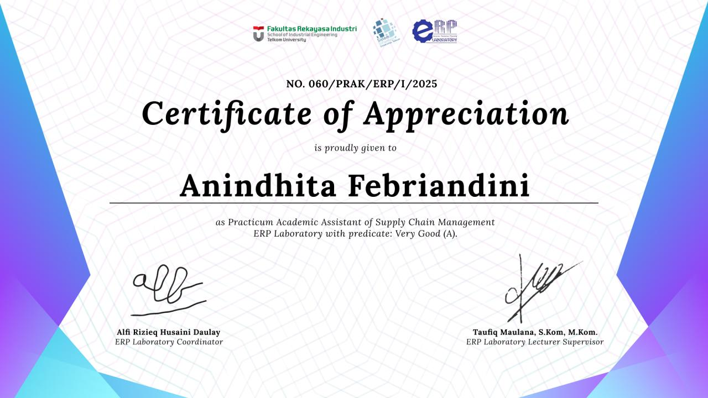
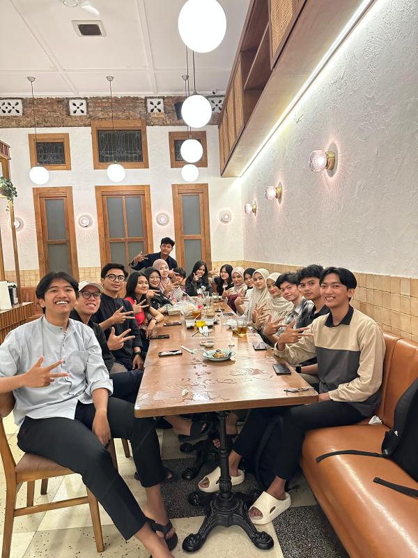
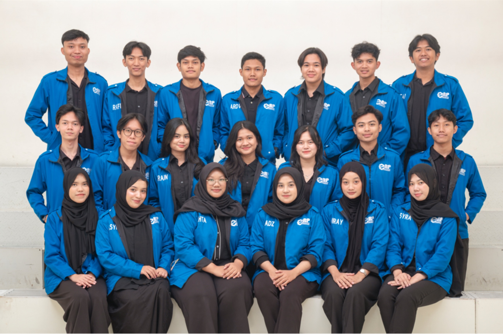

01 / ROLE OVERVIEW
The Experience
During my SAP SCM500 Procurement and Supply Chain practicum experience, I supported learning activities and academic coordination across two consecutive role periods. My responsibilities included helping students follow procurement workflows, coordinating practicum schedules and assistant assignments, and supporting troubleshooting during SAP-based exercises. The experience strengthened my understanding of how procurement activities connect purchase orders, goods receipt, inventory records, and related transaction documents.
02 / RESPONSIBILITIES & CONTRIBUTIONS
What I Supported
Practicum Coordination
Supported the coordination of practicum sessions, assistant assignments, and learning delivery.
Procurement Process Explanation
Connected procurement concepts with SAP exercises and related transaction documents.
Student Guidance & Troubleshooting
Helped students trace navigation, entered-data, or workflow issues encountered during practice.
Scheduling & Academic Support
Supported scheduling and coordination to maintain organized practicum activities.
03 / SELECTED LEARNING ACTIVITIES
From Concepts to Practice
Procurement: Purchase Order to Invoice
Purchase orders, goods receipt, invoice verification, and vendor records represent connected steps in procurement.
Connected each exercise with the document or business activity that follows it in the workflow.
Stock Management & Material Movements
Goods movements update material records and provide references for inventory review.
Helped students connect goods-movement activities with material documents and stock overviews.
Requisition & Procurement Monitoring
Purchase requisitions can lead to purchase orders, acknowledgements, and procurement-status monitoring.
Helped students follow document references and distinguish entered-data issues from workflow-status issues.
04 / MATERIALS AND ACADEMIC SUPPORT
Resources Behind the Work
These visual summaries describe learning and support resources. They are illustrative diagrams, not official system screenshots or claims of sole authorship.
Procurement Basics
Reference for purchase-order entry, goods receipt, invoice verification, and vendor records.
ILLUSTRATIVE LEARNING AID · NOT AN OFFICIAL SYSTEM SCREENStock & Transactions
Practice reference connecting stock overviews, goods receipt, transfer postings, and material documents.
ILLUSTRATIVE LEARNING AID · NOT AN OFFICIAL SYSTEM SCREENStock Material Procurement
Practice material for purchase requisitions, purchase orders with reference, and order acknowledgement.
ILLUSTRATIVE LEARNING AID · NOT AN OFFICIAL SYSTEM SCREENMonitoring & Settlement
Reference for procurement status, receipt settlement, order history, and list displays.
ILLUSTRATIVE LEARNING AID · NOT AN OFFICIAL SYSTEM SCREEN05 / DOCUMENTATION
Snapshots from the Experience
Authentic documentation supplied for this experience. Captions describe the visible activity without adding unverified outcomes.



SKILLS DEMONSTRATED